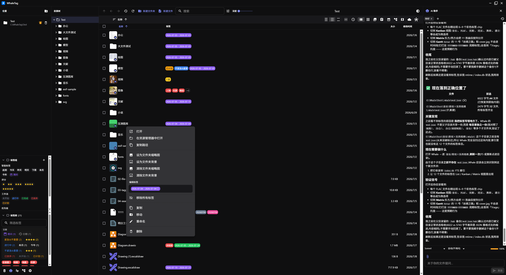

位置管理
位置是 WhaleTag 管理本地文件夹的入口。每个位置对应一个本地目录,所有标签、索引、缩略图都保存在该目录下的 .whale/ 中。
- 添加位置: 选择一个本地文件夹,WhaleTag 会记住它并在左侧位置列表中显示。
- 编辑/删除: 可重命名位置的显示名称或从列表中移除(不会删除真实文件夹)。
- 只读标记: 将位置设为只读后,该根目录会被排除在
allowedRoots 之外,所有写 IPC 都会提前失败,相关按钮也会禁用。
安全提示: 写操作前主进程会调用 assertWithinAllowedRoot 校验路径,并通过 fs.realpathSync 解析 symlink,防止路径逃逸。
访问历史
- LRU 最近访问: 最近打开过的位置会自动排序到列表上方,方便快速切换。
- 前进/后退栈: 在不同位置或文件夹间跳转时,可像浏览器一样前进、后退。
导航元素
- 目录树: 左侧树状结构懒加载子文件夹,可快速展开并跳转到深层目录。
- 面包屑: 顶部显示当前路径,点击任意层级可快速返回上一级或跳到任意祖先目录。
- 虚拟滚动: 基于
react-window,文件夹内文件再多也能流畅滚动。
- 可排序列: 列表视图支持按名称、大小、修改时间等排序。
文件操作
WhaleTag 的主进程负责所有文件 IO,渲染层通过 window.whale 桥调用。支持重命名、移动、复制、删除、新建文件/文件夹、打开、在资源管理器中显示、复制绝对路径等。
- 写保护: 所有写操作都会校验路径是否落在允许的根目录内,只读位置或越界路径会提前抛错。
- 跨卷移动: 当目标与源不在同一卷时,自动回退为
copyFile + rm,兼容 EXDEV。
- 新建防覆盖: 新建文件/文件夹时不会覆盖已有同名项。
- Open With: 调度顺序为「用户默认设置 → 扩展的
isDefault → 任意匹配扩展 → 系统默认应用」。

回收站
- 默认删除: 使用 Electron
shell.trashItem 移入系统回收站,并弹出 "打开回收站" 按钮。
- 永久删除: 按住 Shift 或设置
deleteToTrash: false 时,直接调用 fs.rm,不经过回收站。
原子写
所有关键元数据(sidecar、持久化状态、迁移标志)都通过 atomicWriteText / atomicWriteBytes 写入:
- 先写入临时文件。
- 调用
fsync 确保数据落盘。
- 通过
renameSync 原子替换目标文件。
这保证了即使进程在写中途崩溃,也不会留下半成品的 wsd.json 或持久化状态。